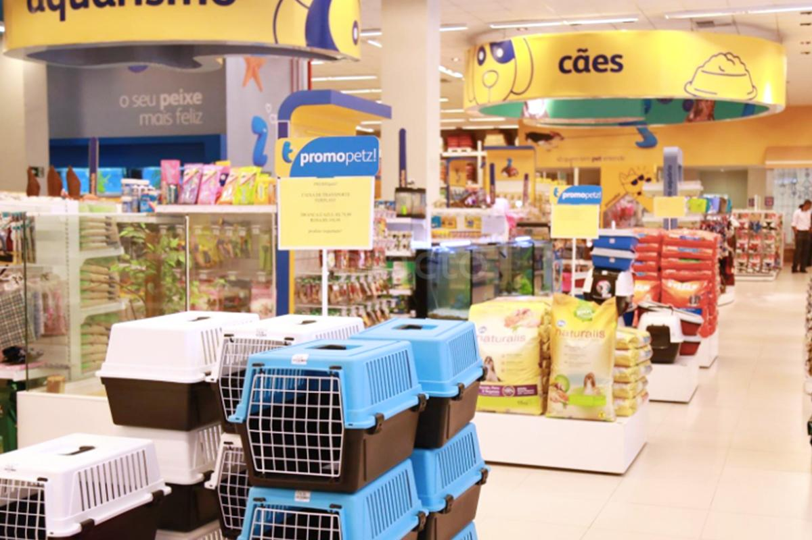

Quando o assunto é variedade de produtos, linha completa de medicamentos e rações das melhores marcas o local sem dúvida é o Mundo Animal.Camas, bolsas, casas e caixas de transporte, roupas, coleiras, brinquedos, comedouros, ossos e petiscos, artigos personalizados, mimos para os proprietários. A mais variada linha de produtos nacionais e importados, produtos diferenciados de acordo com as tendências da moda e para todos bolsos e estilos você encontra no Mundo Animal.
Outro setor que chama atenção na pet shop do Mundo Animal é o setor de venda de medicamentos veterinários. Os principais laboratórios, com os últimos lançamentos de drogas veterinárias estão disponíveis através de tele-entrega ou diretamente na loja da rua 24 de outubro. Para completar a linha de medicamentos, possui ainda uma completa linha de antipulgas dos principais fabricantes. Para a comodidade e segurança dos clientes, o Mundo Animal trabalha com um grande estoque de medicamentos, garantindo assim a continuidade dos tratamentos e um ótimo preço em todos os laboratórios.
O Mundo Animal também procura ter um bom estoque de rações, inclusive das terapêuticas e de tratamento preventivo disponíveis no mercado, tornando-se assim, referência para clientes de outras clínicas veterinárias. Trabalhamos com as linhas completas da Eukanuba, Royal Canin, Hills, Pro Plan, Frost, Cibau, Pedigree, Whiskas entre outras.
Vale lembrar que o Mundo Animal envia para todo interior e outros estados os produtos disponíveis em sua pet shop.
